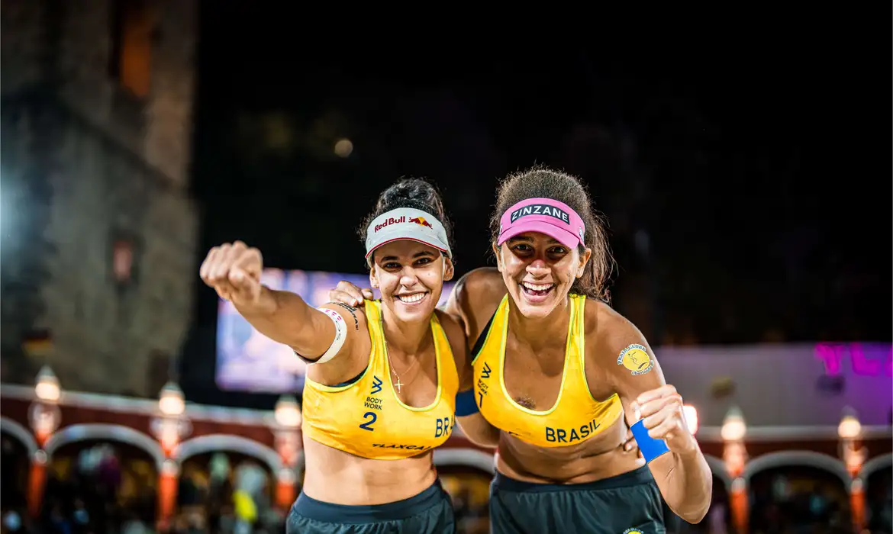

Duda e Ana PatrÃcia ainda celebram o ouro conquistado nas OlimpÃadas de Paris. De volta ao Brasil, as brasileiras terão alguns meses de folga pela frente. Nesse tempo, poderão descansar e reviver os momentos de glória nos Jogos de 2024. Também planejarão os próximos passos da dupla. A cada inÃcio de ciclo, é comum que antigas parcerias cheguem ao fim, e novas surjam. Mas as campeãs olÃmpicas não pretendem saber de mudanças tão cedo.
A parceria entre Duda e Ana PatrÃcia no vôlei de praia profissional começou depois dos Jogos de Tóquio, em 2021. Mas as duas tinham jogado juntas na base. Foram, inclusive, campeãs das OlimpÃadas da Juventude, em 2014.

Atletas Brasileiros e sua modalidades
Ao total são 37 modalidaes que o Brasil teve oportunidades para ganhar Ouro
Ao total são 291 atletas brasileiros!

Top três paÃses que ficaram em destaques nas olimpÃadas
- Eua com 40🥇 44🥈 42🥉 No total 126 medalhas.
- China com 40🥇27🥈 24🥉 No total 91 medalhas
- Japão 20🥇 12🥈 13🥉 No total de 45 medalhas